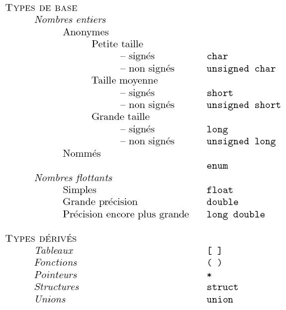
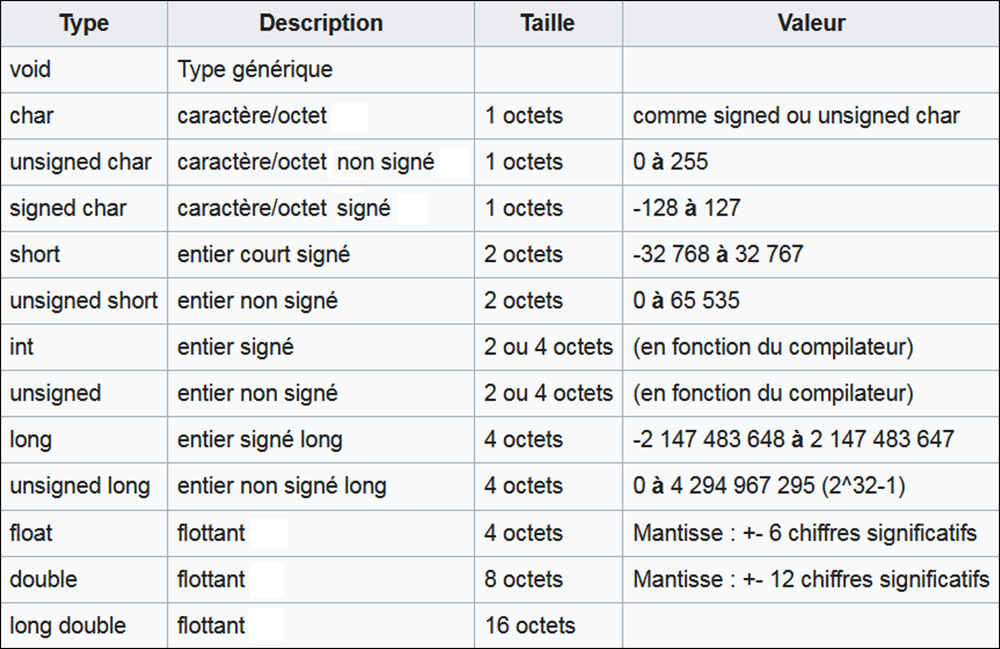

1. Éléments du langage
Tout langage de programmation utilise un ensemble de caractères qui assemblés forment les différents éléments de ce langage, notamment les commentaires, les mots-réservés, les identificateurs, etc.
Les caractères permis
-
Les lettres de l'alphabet (majuscules et minuscules)
-
Les chiffres
-
Les caractères spéciaux (dans l'ordre Ascii): ! " # % & ' ( ) * + , - . / : ; < = > ? [ \ ] ^ _ { | }
-
Certains caratères, appelés séparateurs de mots, sont permis mais ignorés par le compilateur: le caractère d'espacement <sp>, la tabulation <tab>, la tabulation verticale, le carriage return, le retour à la ligne '\n', le saut de page '\f'
Les commentaires
Les commentaires sont importants car ils permettent de se souvenir des intentions mises lors de l'écriture du programme, ou d'expliquer le code à d'autres lecteurs. En ANSI C, ils commencent par la balise ouvrante /* et se terminent par la balise fermante */. Ils peuvent se prolonger sur plusieurs lignes mais ne peuvent en aucun cas s'imbriquer. Par exemple:
#include <stdio.h>/* débutduprogramme */int main() { /* fonction principale */printf("Hello world\n");exit(0);}
Depuis la norme C99, les commentaires de fin de ligne ont été repris de C++ pour être intégrés au langage C. Introduits par la balise //, ils mettent en commentaire tout ce qui suit sur la ligne.
#include <stdio.h>// début// du// programmeint main() { // fonction principaleprintf("Hello world\n");exit(0);}
Les commentaires peuvent être utilisés pour introduire votre fichier, expliquer le rôle d'une variable ou d'une fonction, décrire un morceau du code, etc.
Les mots réservés
Le langage C se réserve l'usage de 32 mots qui de ce fait ne peuvent pas être choisis par le programmeur comme identificateurs de variables ou de fonctions. Ces mots sont repris dans le tableau suivant :
| auto | double | int | struct |
| break | else | long | switch |
| case | enum | register | typedef |
| char | extern | return | union |
| const | float | short | unsigned |
| continue | for | signed | void |
| default | goto | sizeof | volatile |
| do | if | static | while |
Les types de base
Le tableau ci-dessous présente l'ensemble des types connus du compilateur C. On constate que la langage C dispose de deux sortes de types de base, les nombres entiers et les nombres flottants, et d'une famille infinie de types dérivés obtenus en appliquant quelques procédés récursifs de construction, soit à des types fondamentaux soit à des types dérivés définis de la même manière.
On remarque également que le C est assez pauvre en types de base. Il ne connaît que les types numériques entier et réel. Par contre pas de type booléen (simulé par un type entier), ni de type chaîne de caractères (considérée comme un tableau de caractères un peu particulier).
Le tableau suivant présente les types de base du langage C. Les tailles et valeurs dépendent de votre architecture informatique.
Les limites de chaque type sont données dans le fichier d'include limits.h: CHAR_MIN, CHAR_MAX, INT_MIN, INT_MAX...
Les types entiers
Ils sont codés sur un nombre déterminé de bytes. Le tableau suivant reprend les différents types entiers.
| 1 byte | char | |
| unsigned char | 0 à 255 | |
| signed char (en ANSI C) | -128 à 127 | |
| 2 bytes | short (short int) | -32768 à 32767 |
| unsigned short (unsigned short int) | 0 à 65535 | |
| 2 ou 4 bytes | int | |
| unsigned (unsigned int) | ||
| 4 bytes | long (long int) | -2147483648 à 2147483647 |
| unsigned long (unsigned long int) | 0 à 4294967295 |
En principe, le type int correspond à la taille d'entier la plus efficace, càd. la plus adaptée à la machine utilisée. Sur certains systèmes et compilateurs int est synonyme de short (2 bytes), sur d'autres il est synonyme de long (4 bytes). Donc nous aurons toujours:
-
sizeof(char) <= sizeof(short) <= sizeof(int) <= sizeof(long)
Où l'opérateur sizeof retourne la taille en bytes de son paramètre: type ou variable.
Le type int peut par conséquent poser un problème de portabilité: le même programme, compilé sur deux machines distinctes, peut avoir des comportements différents. D'où un conseil important : n'utilisez le type int que pour des variables locales destinées à contenir des valeurs raisonnablement petites (inférieures en valeur absolue à 32767). Dans les autres cas, il vaut mieux expliciter char, short ou long selon le besoin.
Le type char est un type entier qui contient le code Ascii du caractère mais qui peut être utilisé dans les expressions arithmétiques.
Les types réels
Leurs tailles sont laissées à la discrétion du compilateur (notamment en fonction du processeur). Le langage C (ANSI C) connaît 3 types réels : float, double et long double.
Le pseudo-type booléen
Le type booléen n'existant pas, les programmeurs C utilisent généralement un type entier pour le remplacer, sachant que la valeur FAUX correspondra à la valeur nulle 0 tandis que VRAI sera représentée par toute autre valeur (notez toutefois que le résultat d'une expression logique vraie est toujours égal à 1).
Cependant, pour des raisons de lisibilité du code, nous utiliserons dans ce cours le fichier d'en-tête stdbool.h de la bibliothèque standard C. Introduit avec la norme C99, ce fichier définit différentes macros, dont un type booléen bool et deux valeurs, true qui équivaut à 1 et false qui équivaut à 0.
Opérateurs
La plupart des opérateurs définis dans le langage C ont été repris dans la définition du Java. Voici les principaux, classés par ordre de priorité décroissante (priorité maximale = 17). Nous en découvrirons d'autres par la suite.
| Niveau de priorité | Opérateur | Description | Associativité |
|---|---|---|---|
| 17 | [] | indice de tableau | gauche |
| (...) | appel de fonction | ||
| . | sélection de membre | ||
| -> | sélection de membre par déréférencement | ||
| 16 | ++ | post-incrémentation | gauche |
| -- | post-décrémentation | ||
| 15 | ++ | pré-incrémentation | droite |
| -- | pré-décrémentation | ||
| 15 | sizeof | calcule la taille d'une variable (d'un type) | droite |
| ~ | complément à 1 (inversion des bits) | ||
| ! | non logique | ||
| + | identité (opérateur unaire) | ||
| - | changement de signe (complément à 2) | ||
| & | adresse | ||
| * | indirection, déréférenciation | ||
| 14 | (type) | cast, changement forcé de type | droite |
| 13 | * | multiplication | gauche |
| / (réalise une division entière si les 2 opérandes sont entiers, sinon une division réelle) |
division | ||
| % | modulo (uniquement si opérandes entiers) | ||
| 12 | + | addition | gauche |
| - | soustraction | ||
| 11 | << | shift vers la gauche | gauche |
| >> | shift vers la droite (shift logique si premier opérande est unsigned) | ||
| 10 | < | inférieur | gauche |
| > | supérieur | ||
| <= | inférieur ou égal | ||
| >= | supérieur ou égal | ||
| 9 | == | égal | gauche |
| != | différent | ||
| 8 | & | AND bit à bit | gauche |
| 7 | ^ | XOR bit à bit | gauche |
| 6 | | | OR bit à bit | gauche |
| 5 | && | AND logique (évaluation court-circuitée) | gauche |
| 4 | || | OR logique (évaluation court-circuitée) | gauche |
| 3 | ? : | opérateur ternaire conditionnel | droite |
| 2 | = *= /= %= += -= <<= >>= &= ^= |= |
affectation | droite |
| 1 | , | évaluation séquentielle | gauche |
Les conversions de types
La conversion de type est le fait de convertir une valeur d'un type (source) dans un autre (cible). On parle aussi de coercition ou de cast en anglais.
C réalise un certain nombre de conversions pour interpréter une valeur dans un autre type, soit explicite grâce au cast, soit de manière implicite.
Conversions explicites par cast
Le cast (ou transtypage explicite) d'une expression permet de changer le type de la valeur renvoyée par l'évaluation de cette expression.
| type de destination (cast) | type d'origine | exemple | Remarque |
|---|---|---|---|
| un type entier | un type entier ou réel | i = (int)x | ATTENTION, si x est réelle, il y a perte de la partie décimale de la valeur |
| un type réel | un type entier ou réel | d = (double)i |
Conversions implicites
Par ailleurs, C convertit automatiquement certaines expressions dans un type préférentiel, lors de leur évaluation. Avant d'utiliser un opérateur binaire (sauf << et >>), une conversion binaire peut également être réalisée pour permettre aux deux opérandes d'être de même type. Enfin, une conversion peut être réalisée lors d'une affectation.
Les conversions unaires vont s'appliquer à un seul opérande, en respectant les règles énoncées dans le tableau suivant.
| type original de l'opérande | est converti en |
|---|---|
| char ou short | int |
| unsigned char ou unsigned short | int ou unsigned (le plus petit qui parvient à garder la valeur) |
Les conversions binaires vont s'appliquer sur un des opérandes, en respectant la hiérarchie des types suivantes :
int < long < float < double < long doubleL'opérande d'un type inférieur est automatiquement promu dans le type de l'autre opérande (de type supérieur).
Les conversions d'affectation permettent à l'opérande de droite d'être converti pour rester compatible avec le type de l'opérande de gauche.
Dans l'exemple suivant,
long a;int b = 4;double x = 4.2;double y = 2.3;a = (int)x*y + b;
en fonction de la priorité des opérateurs, nous rencontrons les conversions suivantes :
| (int)x | convertion explicite | la valeur réelle contenue dans la variable double x est convertie en int avec perte de la partie décimale |
| (int)x*y | convertion binaire | la multiplication est réalisée dans le type double, le premier opérande (int)x est converti en double (comme y) |
| (int)x*y + b | convertion binaire | la somme est réalisée dans le type double, le deuxième opérande b est converti en double |
| a = (int)x*y + b | convertion d'affectation | le résultat est converti en long int avec perte de la partie décimale |
Que vaut le résultat de cette expression ?
Les littéraux
Il est tout à fait possible d'introduire des valeurs dans le code du programme. Ces valeurs peuvent être des valeurs entières ou réelles, des caractères et même des chaînes de caractères (strings).
représentant une valeur entière
-
En notation décimale (int par défaut): 15, -232
-
En notation décimale (pour un long) : 15L
-
En notation décimale (pour un unsigned) : 15U
-
En notation décimale (pour un unsigned long ) : 15UL
-
En notation octale : 017
-
En notation hexadécimale : 0XF, 0XABC3
représentant une valeur réelle
-
Double par défaut: 1.45, -3.14, 31.4E-14
-
Pour des float : 1.45F, -2E3F
-
Pour des long double : 1.45L, -2E3L
représentant un caractère
En général, C considère les caractères sur un byte (permettant de représenter les 128 caractères du code Ascii standard). Les caractères sont introduits entre des simples quotes. Ils peuvent être donnés:
- Sous forme de caractères
-
'a, 'z', '2'
- En notation octale
-
'\377', '\0'
- Sous forme échappée
-
-
'\a' : sonnerie
-
'\b' : backspace
-
'\f' : saut de page
-
'\n' : passage à la ligne
-
'\r' : carriage return
-
'\t' : tabulation
-
'\v' : tabulation verticale
-
'\\' : le caractère \
-
- En notation hexadécimale
-
-
'\xab'
-
représentant une chaine de caractères
Elles sont notées entre les caractères doubles quotes ", par exemple "Voici une chaine de caractères".
Elles sont stockées, en mémoire, dans le Data Segment, ce qui signifie qu'elles sont invariables durant la vie de l'application.
Elles sont constituées du tableau formé par les caractères de la chaîne et terminé par le caractère de code Ascii 0X00 ('\0').
Il est possible d'incorporer des caractères représentés par leur valeur octale ou hexadécimale, protégés par '\'. Cela nécessite toutefois d'être prudent car si la valeur du caractère ainsi précisée dépasse la taille d'un byte ou utilise des symboles incorrects, le compilateur interprétera la valeur en fonction de ses règles de conversion. Par exemple "\191" sera constituée des caractères '\1', '9', '1', '\0', de même "\1111" sera une chaine de 2 caractères '\111', '1' et '\0', tout comme "xabc" est constituée de '\xab', 'c', et '\0'.
Les identificateurs
Les identificateurs représentent le nom d'un élément utilisé dans un programme pour identifier une variable, une constante, une fonction, etc.
Ils sont composés de lettres (minuscules ou majuscules), de chiffres et du caractère '_', mais il ne peuvent pas commencer par un chiffre. Le C est "case sensitive", c-à-d que les minuscules et majuscules sont considérées comme des caractères différents.
Déclaration et définition d'une variable
C distingue déclaration et définition de variables et de fonctions. Une déclaration indique simplement au compilateur l'existence d'un élément dont le nom et le type ont été spécifiés. Il n'y a pas de réservation de mémoire et l'élément ne peut pas encore être utilisé. Par contre lors d'une définition de variable ou de fonction, il y a physiquement réservation d'espace mémoire (pour y stocker une valeur ou pour donner le code de la fonction). Nous reviendrons plus tard sur cette distinction.
Une variable se déclare en spécifiant son type et l'identificateur qui la représente dans le programme, tandis que lorsqu'on définit une variable, il est possible de lui donner une valeur initiale. Par exemple :
int a; /* déclaration ou définition de la variable a de type int */short b = 3; /* définition de la variable b de type short, initialisée à la valeur 3 */
Les déclarations et définitions multiples (plusieurs déclarations et définitions dans la même expression) sont permises.
int a, b, c = 5, d; /* définition des variables de type int a, b, c, d où seule c est initialisée */
Rem : La valeur d'initialisation peut être le résultat d'une expression mais elle doit être connue lors de la compilation.
int taille = 3 * 4;int tailleD = taille * 2;
Les constantes
En ANSI C, il existe deux techniques pour définir une constante : soit en utilisant une macro (via la directive de préprocesseur #define)
#define MAX 10
Qui sera convertie en sa valeur lors de la précompilation,
soit en définisant une variable qualifiée de constante (via le mot réservé const):
const int MAX = 10;
Notez que, par convention, l'identificateur d'une constante sera toujours composé de lettres majuscules.